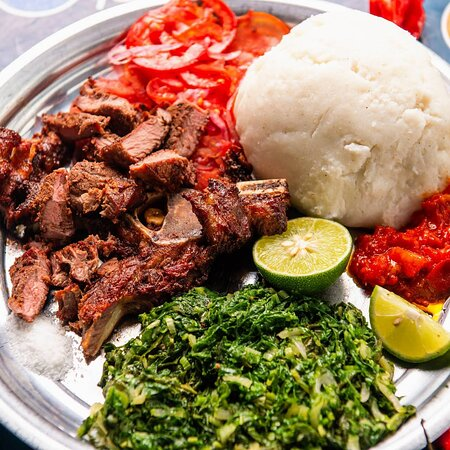

Nyama Choma

The name comprises of two words; nyama which means meat and choma which means barbecued in English. Put the two words together and you have barbecued meat. It is a popular dish in East Africa, especially in Kenya and Tanzania. Normally, beef, pork, mutton, or goat meat are used.
The name comprises of two words; nyama which means meat and choma which means barbecued in English. Put the two words together and you have barbecued meat. It is a popular dish in East Africa, especially in Kenya and Tanzania. Normally, beef, pork, mutton, or goat meat are used.
Ingredients
- Meat:this recipe uses a whole bone-in goat leg but works well with spare ribs, pork, chicken (Kuku choma), beef, mutton, or lamb. Adjust cooking times based on the meat type to avoid overcooking.
- Vegetables:fresh ginger, garlic, onion and, bird eye chillis (optional).
- Spices:cumin, paprika, and stock cubes.
- Fruit:lemon juice (easily substitutable with lime juice).
- Condiments/other:honey, cooking oil, paprika powder, and salt.
How To Make Nyama Choma
- For the nyama choma marinade, blend all ingredients (except the meat) until smooth. If you lack a blender, dice everything finely or use a pestle and mortar. Marinating the meat is an extra step, but it's worth it as it enhances the flavors.
- On a chopping board, make 2-inch (5 cm) slits on the meat.
- In a large bowl, coat the meat with the marinade, ensuring the slits are covered. Save some marinade for basting during grilling.
- Cover the meat and allow it to marinate for at least two hours or overnight, for best results .
- Bring meat to room temperature. Preheat the grill to high; if using charcoal, adjust the heat using the ashes.
- Sear meat for 3 minutes per side to get char marks. Place on oiled foil and top with the reserved marinade. Add garlic and rosemary on top, then cover losely with foil.
- Set meat on a water-filled tray and grill under medium-low heat.
- As an optional step, near the end, mix honey and hot water and glaze the meat with it. Continue grilling until cooked through, and the juices run clear.
- Let the meat rest for 10-20 minutes and then server.
Good to know 💡: While traditional nyama choma is typically marinated only in salt, this recipe includes a flavorful blend that enhances the taste. Be aware that some butchers in Kenya and Tanzania may add MSG, a potentially unhealthy preservative. Therefore, it's advisable to inquire about this with your butcher when having meat grilled at their shop.
What to serve it with
Ugali:A dense, dough-like side made from maize (corn) flour and water. It has a neutral tastes and really compliments the taste of the nyama.